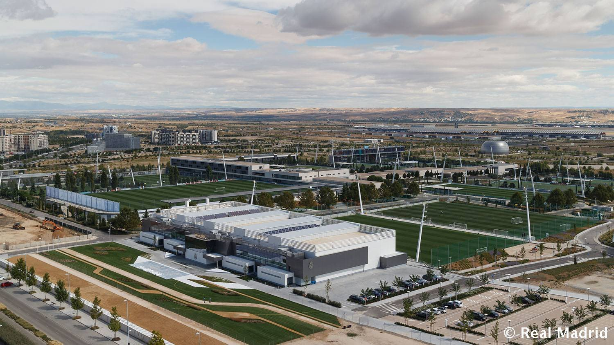

Welcome to Real Madrid City
Welcome to Real Madrid City, the greatest sports facility ever built by a football club. And it is much more than this: it is home to a generation of Real Madrid fans and the new home of the club in the 21st century. This is the place where all our dreams can come true. In a spectacular 1,200,000 m2 of space, there is room for professionals and fans. Two families united one common spirit. Welcome to a City which is a symbol for Real Madrid and their fans.
The sale of Ciudad Deportiva, under the auspices of Real Madrid president Florentino Pérez, led to Real earning approximately €480 million. The complex has been nicknamed, and is known to the players, trainers and club staff as 'Valdebebas' (val-de-bay-bahs), and is named after the district of the city where the complex is located. Inaugurated in 2005, the training centre consists of academy offices, equipment rooms, audio-visuals rooms, a strength and rehab centre, and medical (which consist of examination rooms, treatment rooms, additional rehab facilities and equipment, and a hydrotherapy center that includes hot and cool pools, a cold plunge, and a long but narrow resistance wave pool) and training facilities, as well as 12 and one third fields - three full size synthetic turf fields and four full size natural grass field for the youth, and for the first team, one third full size synthetic turf field and three full size natural grass fields. Ciudad Real Madrid also includes the Alfredo Di Stéfano Stadium where Real Madrid Castilla (Real Madrid's reserve team) plays its home matches
